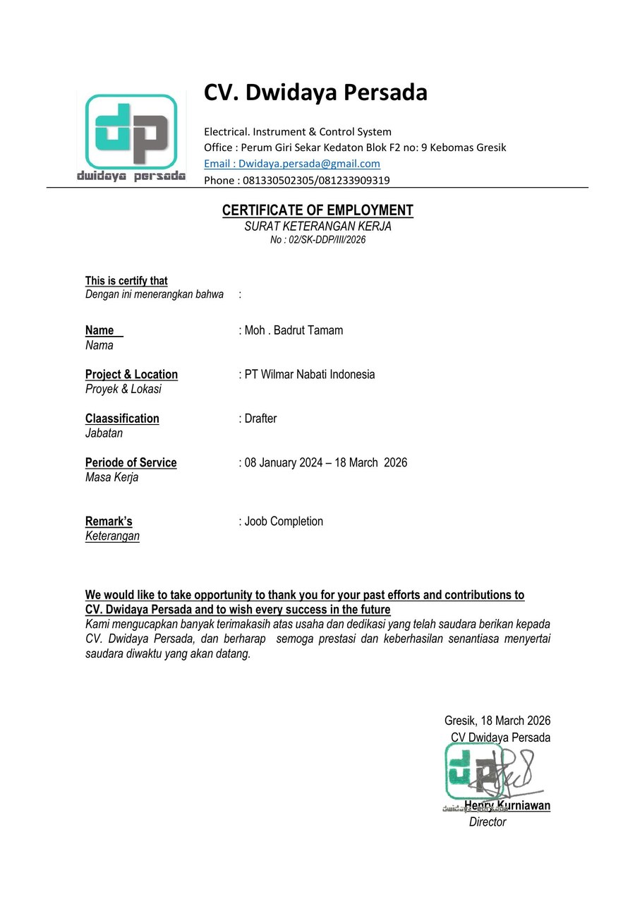

Mei 2026 — Present
Drafter Mechanical
PT Aldzama · Gresik
Membuat gambar fabrikasi, assembly, detail part, dan instalasi; menyiapkan BOM serta as-built drawing.
- Merevisi gambar sesuai review engineer, client, atau kondisi lapangan
- Mengecek kesesuaian gambar dengan standar perusahaan & spesifikasi proyek
- Menghitung kebutuhan material sederhana berdasarkan drawing
- Koordinasi dengan tim engineering, QC, produksi, dan site
- Pengarsipan dokumen & revision control
- Clash checking lintas disiplin (civil, electrical, mechanical)
- Membantu pembuatan drawing untuk kebutuhan project refractory (mis. pouring spout) sesuai dimensi dan arahan engineer
- Menyusun BOM refractory beserta volume dan berat komponen berdasarkan drawing
Maret 2026 — Present
Drafter Project
PT Aldzama · Gresik
Survei lokasi, membuat shop drawing, General Arrangement (GA), layout, workshop/fabrication drawing, serta drawing piping (isometric) dan BoM material.
- Menyiapkan BOM dan material take-off berdasarkan drawing
- Membuat drawing piping & isometric
- Menyusun BoM / list material piping sesuai buku standar pipa
- Revisi gambar sesuai arahan engineer/client/kondisi lapangan
- Membuat as-built drawing & mengelola revision control
- Koordinasi dengan project, produksi, QA/QC, procurement, site
- Mendukung proses tender, fabrikasi, konstruksi, dan commissioning
- Menyusun Work Method Statement (simulasi sketsa)
Januari 2024 — Maret 2026
Drafter Engineer & Drafter Maintenance
CV Dwidaya Persada — kontraktor maintenance & project Electrical/Instrumental under PT Wilmar Nabati Indonesia · Gresik
Menyiapkan dokumen GKOM, approval drawing hingga as-built, serta dokumen QC untuk terminasi JB, DCS, MCC, dan field.
- MC-0 bersama client sebelum pekerjaan dimulai
- Approval for construction untuk QC check lapangan
- Survei lapangan berkala mandiri maupun bersama user
- Desain support tray untuk cable, LCS, dan komponen electrical
- As-built drawing: layout, GA, detail, single line diagram, wiring
- Weekly progress report sesuai kondisi lapangan

Lampiran Dokumen
Surat Pengalaman Kerja — CV Dwidaya Persada
November 2023 — Desember 2023
Freelance 3D Furniture
Perusahaan furniture berbahan kayu · Gresik
Membuat desain 2D rencana mebel, desain & konstruksi 3D, serta cutting list bahan kayu.
Juli 2022 — November 2023
Civil Drafter
CV Aneka Berkah Ukur — konsultan Civil Engineering · Gresik
Membuat kontur situasi lahan, gambar & volume pekerjaan cut and fill, mengikuti survei lokasi, serta
menggambar bangunan umum 2D–3D dan mengekspor data tembakan alat ke AutoCAD.
Januari 2020 — Juli 2020
Architectural Drafter
CV Panorama Konsultan — konsultan arsitektural, landscape & pengawasan · Gresik
Mengerjakan shop drawing & as-built drawing, survei lapangan, gambar bangunan untuk pengajuan IMB,
serta proses pencetakan gambar final.